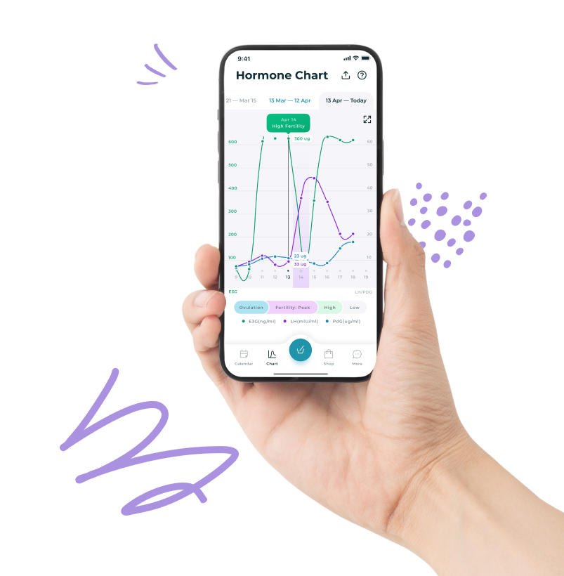
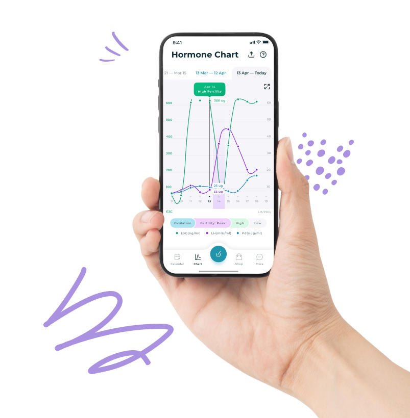
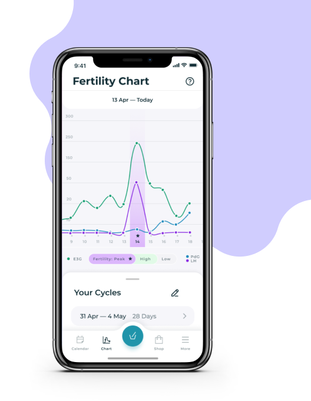
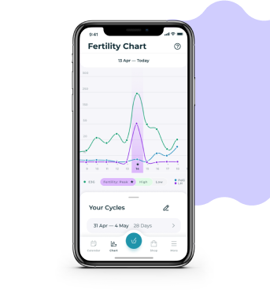
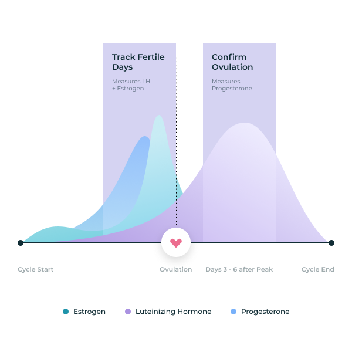
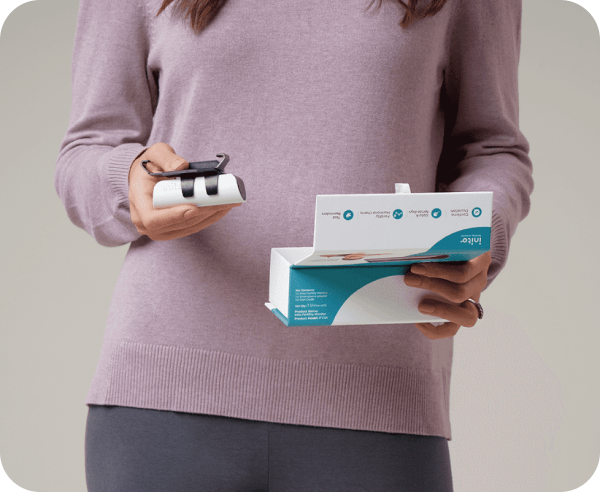
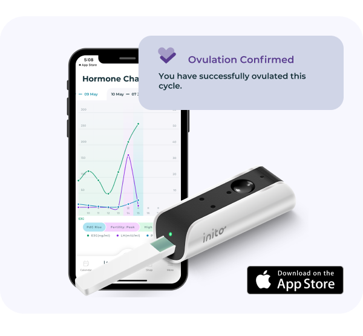
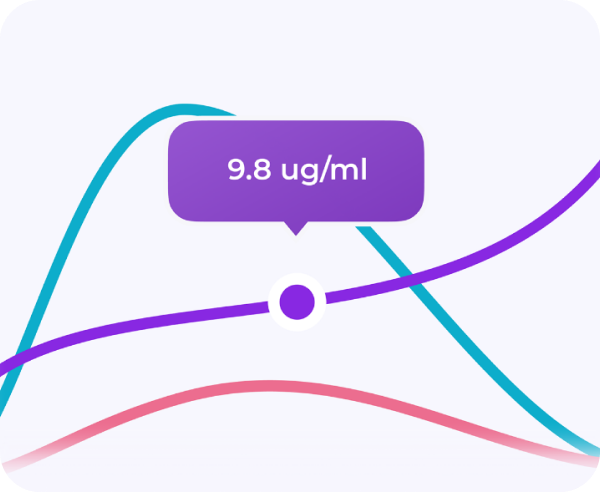
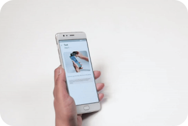
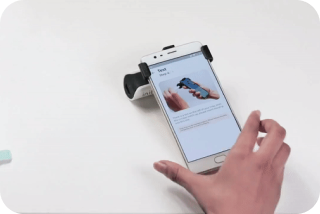

Track your fertility hormones at home, in 5 minutes.
Get accurate results of Estrogen, LH and Progesterone with Inito, the all-in-one, FDA-registered fertility monitor.
 

AS SEEN ON
Not all ovulation tests are created equal
Most ovulation tests predict your fertile days by tracking Estrogen and
Luteinizing Hormone (LH), but fail to measure the hormone that actually
confirms your ovulation and supports pregnancy: Progesterone.
What makes Inito different?
Inito is the only fertility monitor that measures all 3 hormones on a
single test strip, showing you a full picture of your cycles with results
unique to your body.
Predict and confirm your ovulation with actual data
Unlike most ovulation tests that only give you "yes/no" results, Inito provides real numerical values of your fertility hormones.
If you have irregular cycles, actual data is necessary to know exactly when you ovulate, and when is the best time to try to conceive.



Never miss a day again with Inito
Inito tracks up to 6 fertile days and confirms ovulation by measuring all 3 hormones in just 5 minutes:
“Inito is all that you need to give you the best chance of conception."
Dr. Rachel Wagner
MD
Why measure Progesterone?
Anovulation (having a menstrual cycle with no egg) is actually a common occurrence, affecting 1 in 10 women*
A sure way to confirm ovulation is a rise in Progesterone level
after peak fertility. Progesterone also supports implantation and elevated levels of PdG during the 7-10 day window after ovulation correlates to higher chances of a successful pregnancy.
* Source: National Institutes of Health

Why Inito is the smarter way to get pregnant

Adapts to your unique irregular cycle

Most ovulation kits have a set value or a threshold, making
them likely to give a false read if your hormones fall outside
the average range.
Every woman is unique, especially with a condition like PCOS
or Thyroid which can influence hormone levels. Inito measures
real values of your hormones to personalize results to the
unique you
Inito tracks everything so you don't have to
The Inito Fertility Monitor comes with a free easy-to-use App, so you can track your fertile days with ease and know exactly when you ovulate.
Our App notifies you for everything:
- Your fertility levels
- When to test on the right days
- When you've successfully ovulated
- And when to roll into bed!


Get charts and actual values of your hormones
Actual numerical values are necessary to know whether your
PdG levels are sufficient enough to support a healthy
pregnancy.
Studies show that Pdg levels lower than 7.9ng/ml in serum
(around 10ug/ml PdG) 6-8 days after ovulation are associated
with lower pregnancy outcomes.
Your own fertility lab at your fingertips
Easy-to-read fertility diagnostic results directly on your
iPhone, in just 5 minutes.
* The Inito Fertility Monitor currently supports iPhone 7 and
up. Android phones are not supported at the moment.
1
Dip the test strip in
urine for 15 seconds.

2
Attach the Inito Fertility
Monitor to your iPhone*.

3
Insert the test strip into the
Inito Fertility Monitor.
4
Get personalized results
on our App in 5 minutes.

Krista Wilhelm
May 22, 2021
Inito tells you all you need to monitor your fertility
I made comparisons with other brands to allow me to choose the better product better. Inito tests all
three of the hormones - LH, Estrogen, and Progesterone all in one stick. How can other products ignore
measuring progesterone? It's a no brainer! You guys are tops. I highly recommend Inito
Your top questions, answered
What results does Inito give?
Inito gives results as: High Fertility, Peak Fertility or Ovulation Confirmed.
Inito
also shows you the charts and actual values of all 3 hormones.